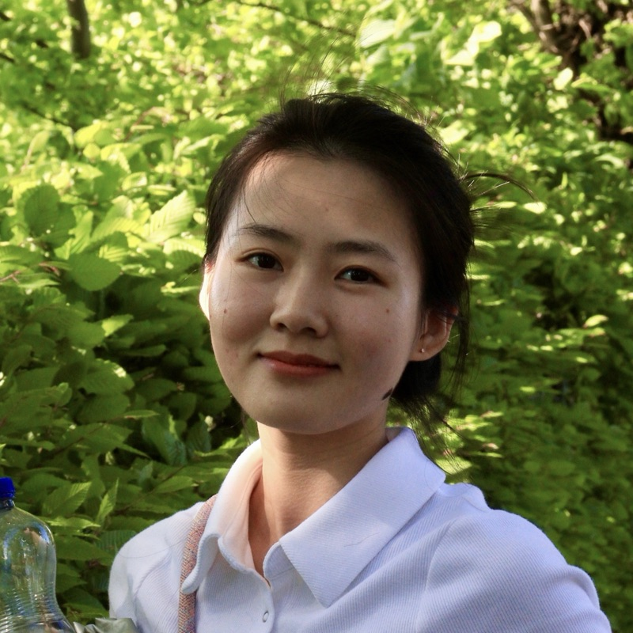

Ph.D. Student Data Science William & Mary
Zhi Yang 阳芷
Trustworthy AI, multimodal learning and
interactive AI systems.

About
I am a first-year Ph.D. student in the Department of Data Science at William & Mary, advised by Prof. Jindong Wang.
My research focuses on multimodal AI and trustworthy machine learning, with particular interests in streaming and interactive multimodal systems. I am currently investigating how streaming adaptation affects vision-language models’ visual understanding, temporal reasoning, robustness, and safety. More broadly, I am interested in developing reliable and effective multimodal AI systems for real-world applications.
Previously, my research focused on privacy, fairness, and explainability in machine learning, particularly measuring and mitigating disparities in privacy risks and model performance across different demographic groups.
Before joining William & Mary, I received my M.Eng. in Computer Science from the Southern University of Science and Technology (SUSTech), where I was advised by Dr. Changwu Huang, Prof. Ke Tang, and Prof. Xin Yao. I received my B.Eng. in Software Engineering from Yunnan University.
Research interests
Multimodal AI
Trustworthy AI
Model Understanding & Adaptation
Research projects
-
Understanding and Evaluating Streaming Multimodal Models
Sep 2026 – present
Investigating how streaming adaptation affects the capabilities and reliability of vision-language models. This project systematically compares streaming models with their offline counterparts across image and video understanding tasks, examining changes in visual perception, temporal reasoning, robustness, safety, and fairness. We further study how streaming post-training, memory mechanisms, and interaction patterns contribute to these changes.
-
Impact of Visual Redundancy on Multimodal Reasoning
Jan 2025 – May 2026
Investigated the impact of visual redundancy on multimodal reasoning through an exhaustive patch-level ablation study, partitioning images into 3 × 3 grids and evaluating all 512 possible patch combinations. Observed that a single patch was often sufficient for correct predictions, while additional visual information could lead to incorrect answers, revealing a non-monotonic relationship between visual context and VLM performance.
-
Adaptive LLM Personalization via Activation Engineering
Oct 2025 – Feb 2026
Explored rapid LLM personalization through activation engineering, aiming to mitigate the cold-start problem without resource-intensive fine-tuning. Investigated the composition of steering vectors for fine-grained adaptation to diverse user backgrounds, revealing challenges in achieving precise and consistent control over response styles.
-
Emotion Influence on LLM-Based Multi-Agent Systems
Jun 2025 – Sep 2025
Studied how emotional stimuli affect agent behavior across network topologies; found no consistent sensitivity patterns and that modern LLMs remain robust to emotion-induced perturbations.
-
Fair Privacy
Nov 2024 – May 2025
-
Fairness & Privacy
Mar 2024 – Jul 2024
-
Explainability & Fairness
Feb 2023 – Jun 2023
Publications
-
Preprint2025
On the Fairness of Privacy Protection: Measuring and Mitigating the Disparity of Group Privacy Risk for Differentially Private Machine Learning
arXiv preprint arXiv:2510.09114, 2025
Introduces a membership inference game that efficiently audits worst-case privacy risk to measure privacy-risk disparities across groups, and an adaptive group-specific gradient clipping strategy for DP-SGD that reduces them.
-
ICONIP 2024
Towards Private and Fair Machine Learning: Group-Specific Differentially Private Stochastic Gradient Descent with Threshold Optimization
International Conference on Neural Information Processing (ICONIP), 2024, pp. 66–80. Springer Nature Singapore.
A group-specific DP-SGD training framework combined with classification threshold optimization that jointly reduces accuracy disparities and achieves outcome fairness under differential privacy.
-
ICANN 2023
An Explainable Feature Selection Approach for Fair Machine Learning
International Conference on Artificial Neural Networks (ICANN), 2023, pp. 75–86. Springer Nature Switzerland.
ExFS improves outcome fairness by recursively removing features that contribute to unfairness, guided by feature attribution explanations of model predictions.
Education
-
Ph.D. in Applied Science (Data Science concentration)
Fall 2026 – present
William & Mary (W&M)
Advisor: Prof. Jindong Wang
-
M.Eng. in Computer Science and Technology
Sep 2023 – Jun 2026
Southern University of Science and Technology (SUSTech)
Advisors: Dr. Changwu Huang, Prof. Ke Tang, Prof. Xin Yao
-
B.Eng. in Software Engineering
Sep 2019 – Jun 2023
Yunnan University (YNU)
GPA 3.8/4.0 (Top 2%)
Honors & awards
- Outstanding Academic Scholarship, SUSTech
- Outstanding Research Assistance Scholarship, SUSTech2025, 2024
- Outstanding Graduate Teaching Assistant, SUSTech
- National Scholarship (Top 1%, School of Software, Yunnan University)
- National Silver Award, 8th China “Internet+” Innovation and Entrepreneurship Competition
- University-level First-class Scholarship, Yunnan University2021, 2020
Teaching
-
Teaching Assistant, Fundamentals of Python Programming
Sep 2023 – Jun 2025
Dept. of Computer Science and Engineering, SUSTech · four semesters
Led lab sessions; designed assignments, quizzes and exams.